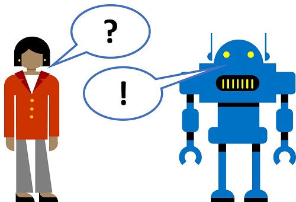

Pense na frequência com que você se comunica com outras pessoas por meio de mensagens instantâneas, mídias sociais, email ou outras tecnologias on -line. Para muitos de nós, é a nossa forma de contato. Quando você tem uma pergunta no trabalho, pode entrar em contato com um colega usando uma mensagem de bate -papo, que pode usar em dispositivos móveis, para que esteja sempre em contato.

Os bots são agentes de IA que se comunicam usando esses tipos de canais, permitindo um envolvimento natural e conversacional com os serviços de software.
Para cenários de suporte ao cliente, é comum criar um bot que possa interpretar e responder a perguntas frequentes por meio de uma janela de bate -papo, email ou interface de voz. Subjacente à interface bot, há uma base de conhecimento de perguntas e respostas apropriadas que o bot pode procurar respostas adequadas.
O serviço de fabricante de QNA é um serviço cognitivo no Azure que permite criar rapidamente uma base de conhecimento, digitando pares de perguntas e respostas ou em um documento ou página da web existente. Em seguida, ele pode usar alguns recursos de processamento de linguagem natural embutidos para interpretar perguntas e encontrar respostas apropriadas.
- Abra outra guia do navegador e vá para o portal da QNA Maker em https://qnamaker.ai . Entrar no uso da conta da Microsoft associada à sua assinatura do Azure.
- No portal da QNA Maker, selecione Crie uma base de conhecimento .
- Se você não criou anteriormente um recurso de serviço QNA, selecione Crie um serviço QNA . O portal do Azure será aberto em outra guia para que você possa criar um serviço de fabricante de QNA na sua assinatura. Use as seguintes configurações:
- Nome : Um nome único para o seu recurso QNA
- Subscrição : Sua assinatura do Azure
- Nível de preço : F0
- Grupo de recursos : Selecione um grupo de recursos existente ou crie um novo
- Azure Search Pricing Nível : F
- Localização de pesquisa do Azure : Qualquer local disponível
- Nome do aplicativo : O mesmo que ** nome ** (“.AzureWebsites.net” será anexado automaticamente)
- Localização do site : O mesmo que ** Localização de pesquisa do Azure **
- Insights de aplicativos : Desativar
Observação : Se você já provisionou um nível livre Fabricante de QNA ou Pesquisa do Azure Recursos, sua cota pode não permitir que você crie outra. Nesse caso, selecione um nível diferente F0 / F .
- Aguarde a implantação do serviço QNA e os recursos relacionados para concluir no portal do Azure.
- Retorne à guia do portal do QNA Maker e no Etapa 2 Seção, clique em Atualizar Para atualizar a lista de recursos de serviço QNA disponíveis.
- Conecte seu serviço QNA ao seu KB, selecionando as seguintes opções:
- ID do diretório do Microsoft Azure : O ID do diretório do Azure para sua assinatura
- Nome da assinatura do Azure : Sua assinatura do Azure
- Serviço do Azure QNA : O recurso de serviço QNA que você criou na etapa anterior
- Linguagem : Inglês
Dica : Se uma mensagem informando que a função não tiver permissão para executar a ação é exibida, atualize a página do navegador para o portal da QNA Maker.
- No Etapa 3 Seção, insira o nome Margie’s Travel KB .
- No Etapa 4 Seção, na Url caixa, tipo https://github.com/microsoftdocs/ai-fundamentals/raw/master/data/qna_bot/margies_faq.docx e clique**+ Adicione URL**. Então abaixo Chit-Chat , selecione Profissional .
- No Etapa 5 Seção, clique em Crie seu KB .
- Aguarde um minuto ou mais enquanto sua base de conhecimento for criada. Em seguida, revise as perguntas e respostas que foram importadas do documento de Perguntas frequentes e das respostas profissionais predefinidas com Chit-Chat.
Sua base de conhecimento é baseada nos detalhes do documento de FAQ e em algumas respostas predefinidas. Você pode adicionar pares personalizados de perguntas e respostas para complementá-las.
- Clique**+ Adicione o par qNA**.
- No Pergunta Caixa, digite
hello . Em seguida, clique**+ Adicione fraseada alternativa**e digite oi .
- No Responder Caixa, digite
hello .
Agora que você tem uma base de conhecimento, pode testá -lo no portal da QNA Maker.
- No canto superior direito da página, clique Salve e treine para treinar sua base de conhecimento.
- Após a conclusão do treinamento, clique ← Teste Para abrir o painel de teste.
- No painel de teste, na parte inferior, entre na mensagem Oi . A resposta Olá deve ser devolvido.
- No painel de teste, na parte inferior, entre na mensagem Eu quero reservar um voo . Uma resposta apropriada das perguntas frequentes deve ser retornada.
- Quando terminar de testar a base de conhecimento, clique → Teste Para fechar o painel de teste.
A base de conhecimento fornece um serviço de back-end que os aplicativos do cliente podem usar para responder a perguntas através de algum tipo de interface do usuário. Geralmente, esses aplicativos de clientes são bots. Para disponibilizar a base de conhecimento para um bot, você deve publicá -lo como um serviço que pode ser acessado pelo HTTP. Você pode usar o serviço do Azure Bot para criar e hospedar um bot que use a base de conhecimento para responder às perguntas do usuário.
- No topo da página da QNA, clique Publicar . Então no Margies viajam KB página, clique Publicar .
- Depois que o serviço foi implantado, clique Criar bot . Isso abre o portal do Azure em uma nova guia Browser para que você possa criar um bot de aplicativo da web na sua assinatura do Azure.
- No portal do Azure, crie um bot de aplicativo da web com as seguintes configurações (a maioria delas será preenchida para você):
- Alça de bot : Um nome único para o seu bot
- Subscrição : Sua assinatura do Azure
- Grupo de recursos : O grupo de recursos que contêm seu recurso de fabricante de QNA
- Localização : O mesmo local do seu serviço de fabricante de QNA .
- Nível de preço : F0
- Nome do aplicativo : O mesmo que o Alça de bot com * .azurewebsites.net anexado automaticamente
- Idioma sdk : Escolha C# ou Node.js
- Chave de autenticação QNA : Isso deve ser definido automaticamente para a chave de autenticação para sua base de conhecimento QNA
- App Service Plan/Localização : Isso deve ser definido automaticamente para um plano e localização adequados
- Insights de aplicativos : Desligado
- ID do aplicativo da Microsoft e senha : Criar automaticamente o ID do aplicativo e a senha.
- Aguarde o seu bot ser criado (o ícone de notificação no canto superior direito, que parece uma campainha, será animado enquanto você espera). Então, na notificação de que a implantação foi concluída, clique Vá para o recurso (ou alternativamente, na página inicial, clique**Grupos de recursos*, Abra o grupo de recursos onde você criou o bot de aplicativo da web e clique nele.)
- Na lâmina do seu bot, veja o Teste no bate -papo da web página, e aguarde até que o bot seja exibido a mensagem Olá e bem -vindo! (Pode levar alguns segundos para inicializar).
- Use a interface de bate -papo de teste para garantir que o seu bot responda às perguntas da sua base de conhecimento, conforme o esperado. Por exemplo, tente enviar Eu preciso cancelar meu hotel .
Um bot pode ser usado para fornecer uma interface para os usuários através de um ou mais canais . Por exemplo, o mesmo bot pode suportar interações por meio de uma interface de bate -papo na web, email e equipes da Microsoft.
- No portal do Azure, na lâmina do seu bot, veja o Canais página.
- Observe que o Chat da web O canal foi adiado automaticamente e que outros canais para plataformas de comunicação comuns estão disponíveis.
- Ao lado do Chat da web canal, clique Editar . Isso abre uma página com as configurações necessárias para incorporar seu bot em uma página da web. Para incorporar seu bot, você precisa do código de incorporação HTML fornecido, bem como uma das teclas secretas geradas para o seu bot.
- Copie o Código de incorporação E cole-o na célula abaixo, substituindo o comentário
<!-Código de incorporação vai aqui-> .
- Clique Mostrar Para uma das suas chaves secretas (não importa qual) e copie -as. Em seguida, cole -o no seu código de incorporação HTML abaixo, substituindo
seu_SEGREDO_Aqui .
- Mude o altura da minia valor em seu código HTML para 200px (em vez do padrão 500px padrão). Isso ajudará a garantir que a interface HTML seja visível sem rolar.
- Execute a célula abaixo clicando no Execute a célula (▷) Botão à esquerda da célula para renderizar o HTML.
- Na interface de bate -papo html, teste o bot enviando uma pergunta, como Quem é Margie? ou A que destinos posso ir? (Quando o bot inicializa, pode responder com a mensagem Olá e bem -vindo Além de responder sua pergunta.).
%%html
<!-- EMBED CODE GOES HERE -->
Experimente o bot. Você provavelmente descobrirá que ele pode responder a perguntas das perguntas frequentes com bastante precisão, mas terá capacidade limitada de interpretar perguntas com as quais não foi treinada. Você sempre pode usar o portal da QNA Maker para editar a base de conhecimento para melhorá -lo e republicá -lo.
Início